Las 10 Mejores Rutas de Senderismo en Tenerife para 2026
Desde la subida al Teide hasta los barrancos de Anaga: selección de las rutas más espectaculares de Tenerife para todos los niveles.
Leer artículoGuías, rutas y consejos para explorar las Islas Canarias al máximo.
Desde la subida al Teide hasta los barrancos de Anaga: selección de las rutas más espectaculares de Tenerife para todos los niveles.
Leer artículo
Todo sobre la subida al Teide: permisos, rutas, época del año, qué llevar y los errores más comunes que cometen los turistas.
Leer artículo
Lista completa de equipamiento para senderismo en Canarias: ropa, calzado, tecnología y extras que marcan la diferencia en las rutas canarias.
Leer artículo
Comparamos las 9 islas canarias para el senderismo: dificultad, paisajes, red de senderos y experiencia general. Te ayudamos a elegir.
Leer artículo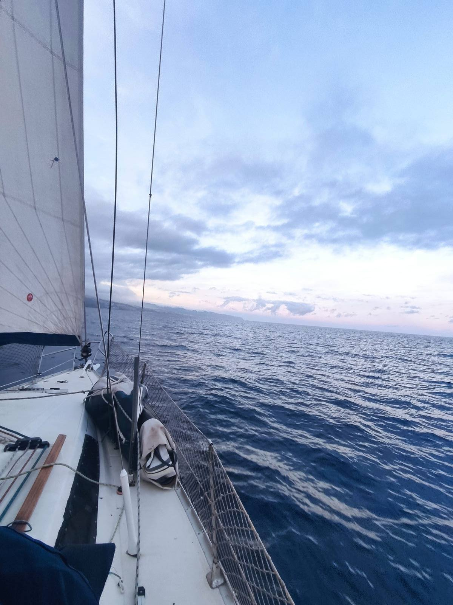
Los mejores spots de kayak en Canarias: calas de Papagayo, costa sur de La Gomera, La Graciosa y más. Con consejos para principiantes y avanzados.
Leer artículoSin artículos en esta categoría

Qué es, qué equipo comprar y cómo configurarlo para no quedarte incomunicado en Taburiente, Masca o Güigüi.
Leer artículo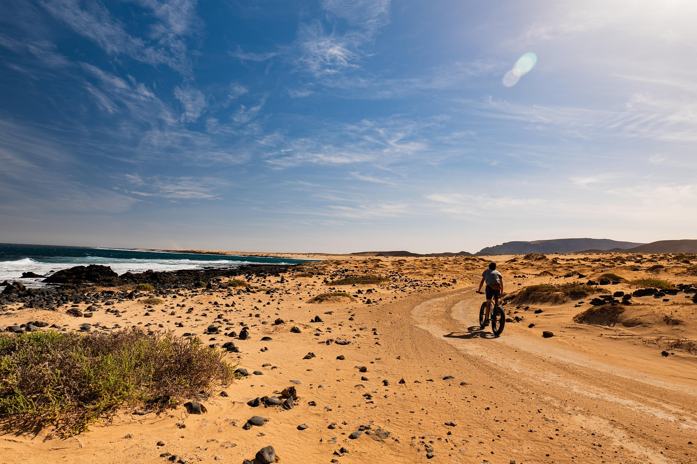
Lanzarote, Gran Canaria, Tenerife y Fuerteventura. Las mejores rutas MTB para todos los niveles en el archipiélago.
Leer artículo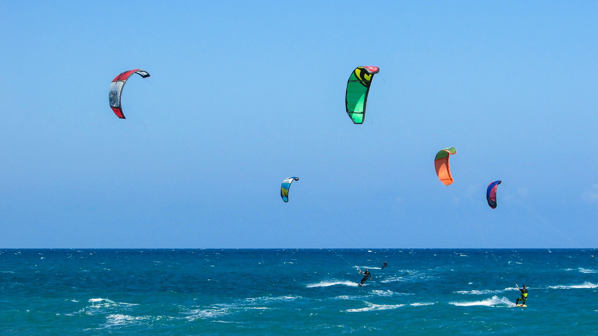
Sotavento, El Médano y Famara. Los mejores spots del archipiélago y cómo empezar desde cero.
Leer artículo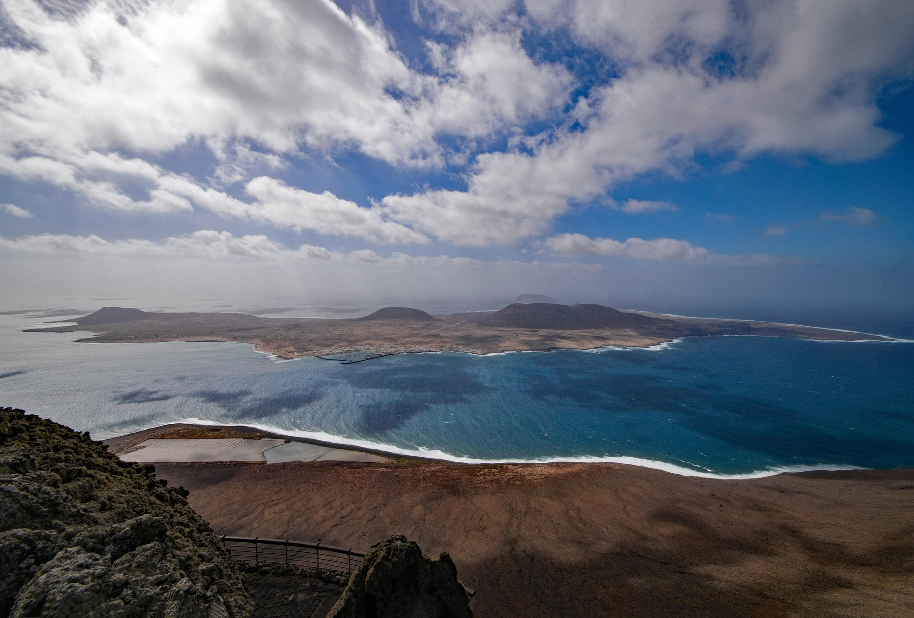
Cómo llegar, qué hacer, Las Conchas y Montaña Amarilla. La isla más pequeña y más auténtica de Canarias.
Leer artículo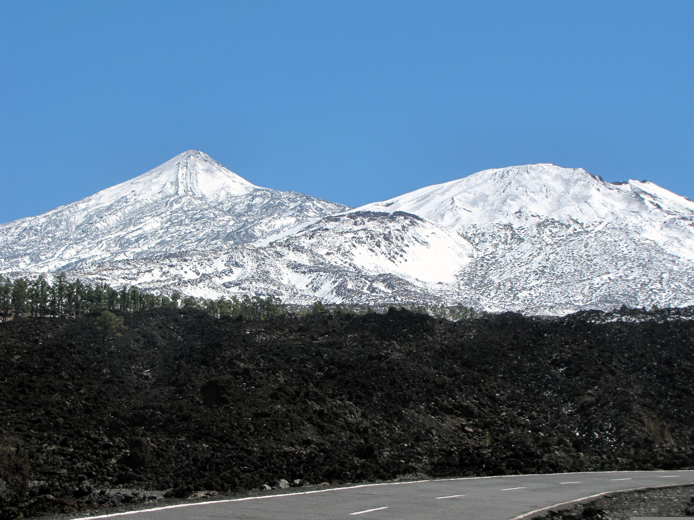
20°C mientras Europa está bajo cero. Las mejores rutas de temporada baja en La Gomera, Tenerife y El Hierro.
Leer artículo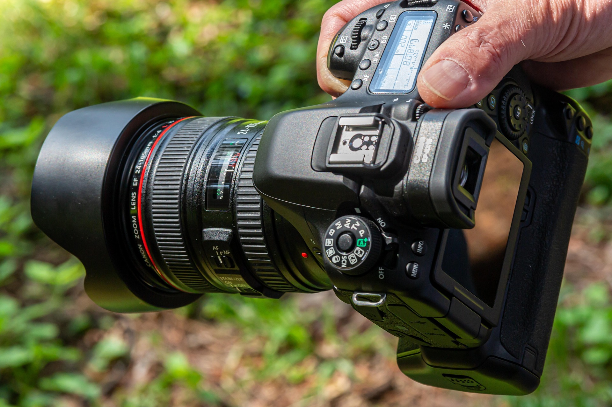
Teide al amanecer, laurisilva con niebla, coladas de lava y el cielo estrellado de La Palma. Los spots más épicos.
Leer artículo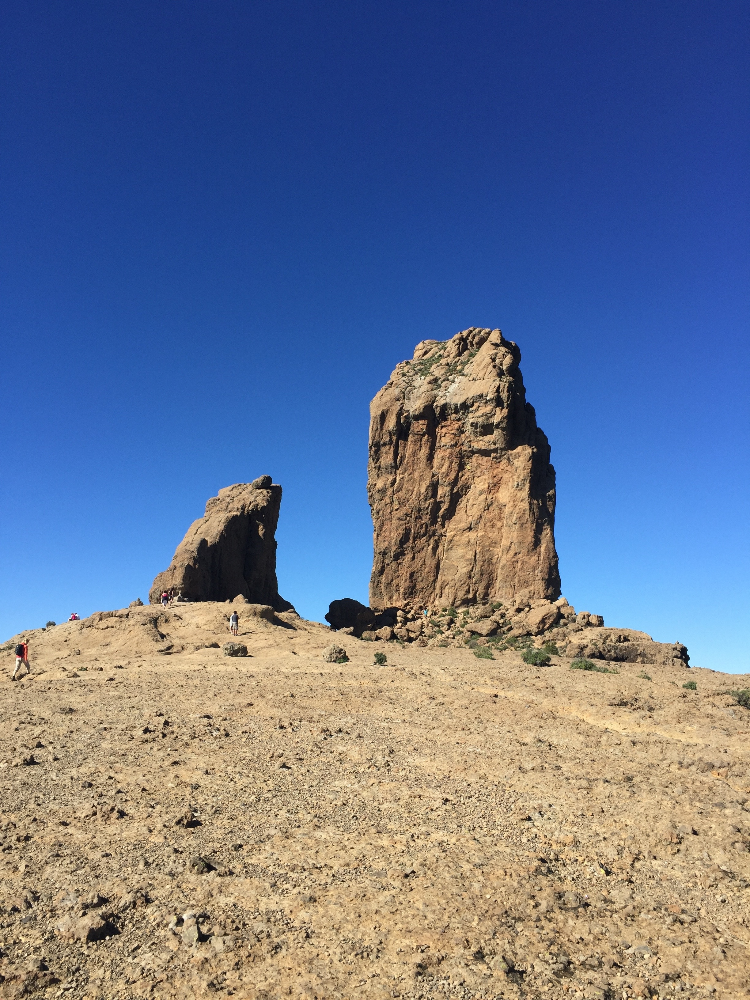
Roque Nublo, Güigüi, Barranco de Guayadeque y las mejores rutas de Gran Canaria para senderistas de todos los niveles.
Leer artículo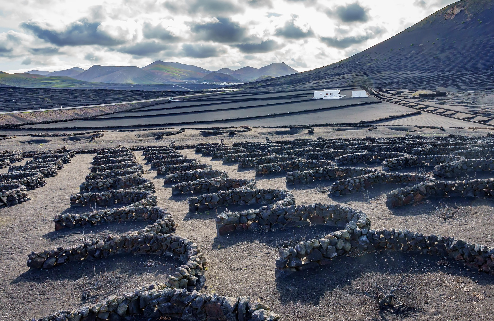
Timanfaya, Caldera Blanca, kayak en Papagayo y el IRONMAN más duro del mundo. Todo lo que necesitas saber sobre Lanzarote.
Leer artículo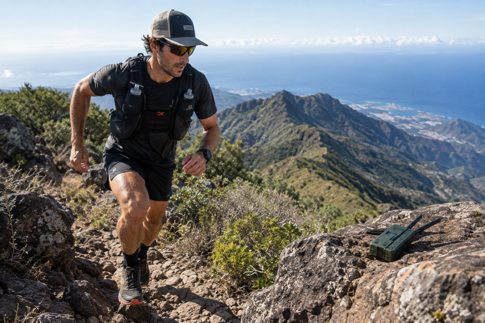
Zapatillas, mochila, hidratación y tecnología para correr por volcanes, laurisilva y barrancos canarios.
Leer artículo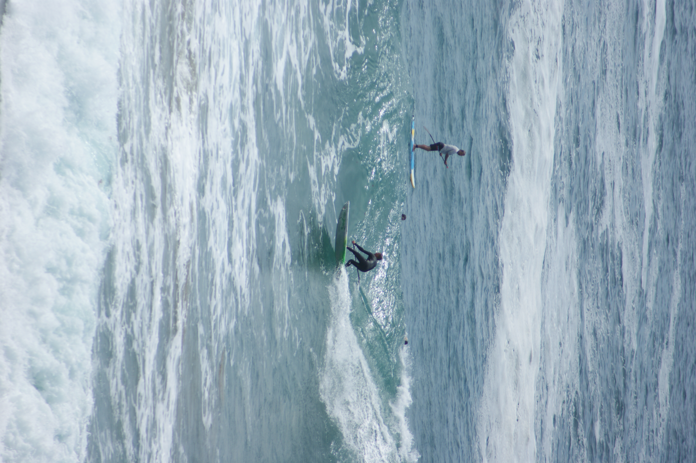
Sotavento, Corralejo, Cofete y los mejores spots de kitesurf y surf en Fuerteventura para todos los niveles.
Leer artículo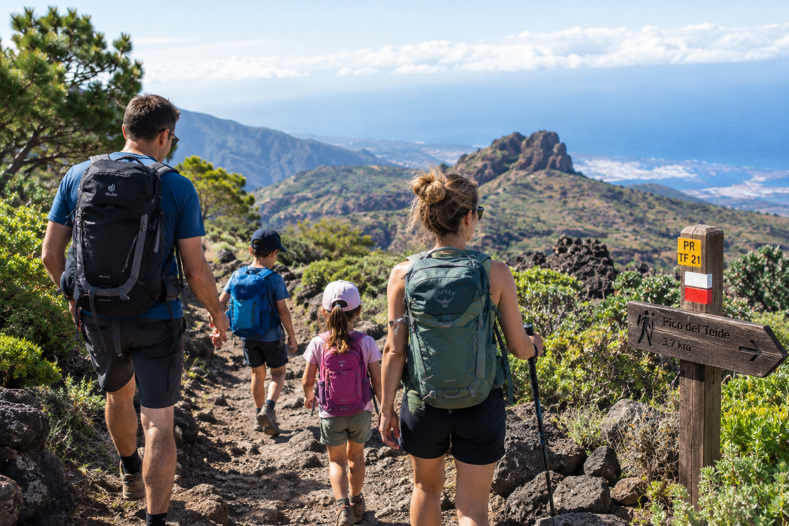
8 rutas fáciles en Canarias perfectas para hacer con niños. Distancias cortas, paisajes increíbles y diversión garantizada.
Leer artículo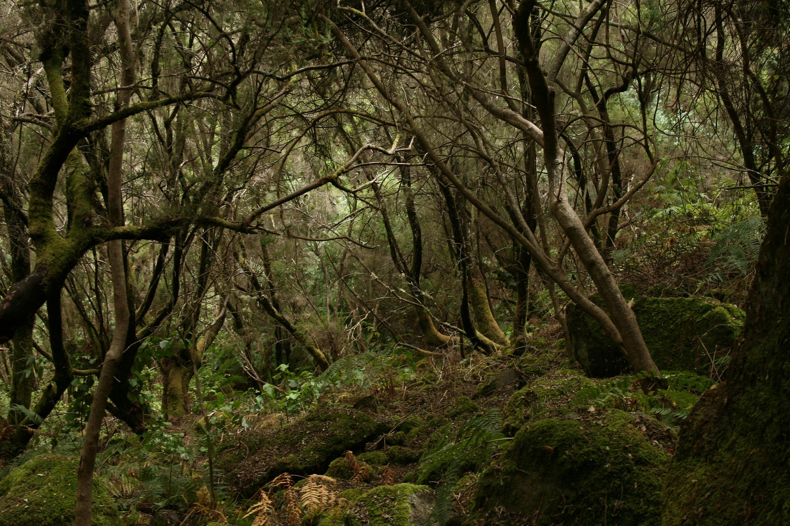
Las tres islas más auténticas y menos masificadas de Canarias. Garajonay, Transvulcania, La Restinga y el silencio más absoluto.
Leer artículo
Guía completa de trail running en Canarias. Las 10 mejores rutas para corredores de todos los niveles: desde el Teide hasta la Transvulcania.
Leer artículo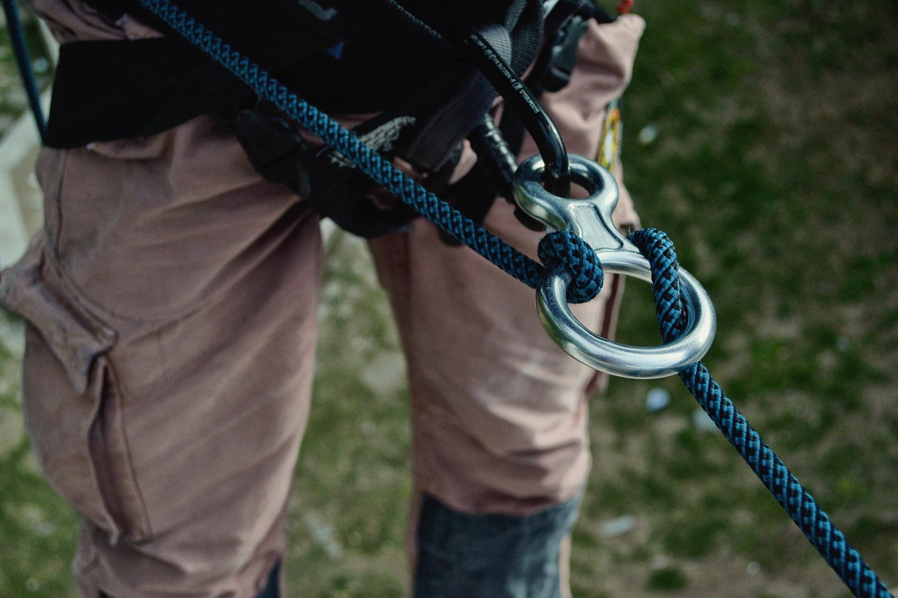
Guía de barranquismo en Canarias para principiantes. Barrancos accesibles, equipo necesario, seguridad y los mejores barrancos de Tenerife, Gran Canaria y más.
Leer artículo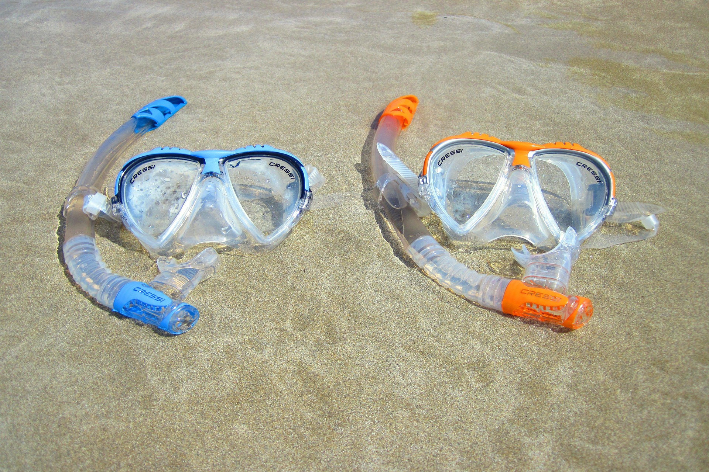
Los mejores lugares para bucear y hacer snorkel en Canarias. El Hierro, Gran Canaria, Lanzarote y más. Guía con profundidades, visibilidad y cómo llegar.
Leer artículo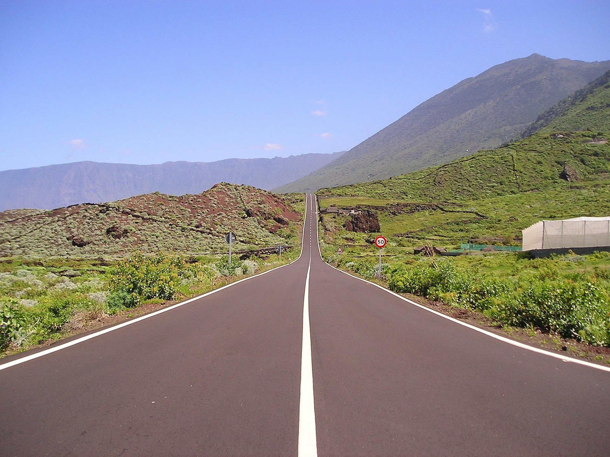
Todo sobre El Hierro para aventureros. Buceo, senderismo, Camino de Jinama, sabinar y cómo llegar. La isla más auténtica de Canarias sin masificación.
Leer artículo